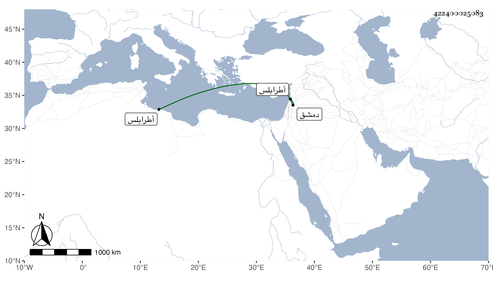

0902Sakhawi.DawLamic.ITO20230111-ara1.EIS1600.422400025083
Biography ID: 422400025083
411
محمد بن أبي بكر بن عبد الباسط بن خليل الماضي جده الآتي أبوه . ولد سنة تسع وأربعين وثمانمائة ونشأ فقرأ القرآن وبعض التنبيه وألفية النحو وغير ذلك ، واشتغل يسيرا وكتب على الشمس المالكي وتميز في الخط قليلا ، وحج في تجمل بواسطة أبيه ثم وثب عليه بتحسين أحمد بن جبينة الصيرفي له نكاية فيه حتى استقر في نظر الجوالي ، وحمل نفسه مما التزم به المشار إليه مما كان سببا لاتلاف ابن جبينة ولذل هذا بربقة الديون ولم يحمد أحد صنيعهما ، وتكرر سفره لدمشق وطرابلس وحماه في حياة أبيه وبعده ولم يظفر بطائل والغالب عليه الحمق وخفة العقل مع كونه لم يشارك أباه فيما يرمي له . مات في ربيع الثاني سنة اثنتين وتسعين عفا الله عنه .
